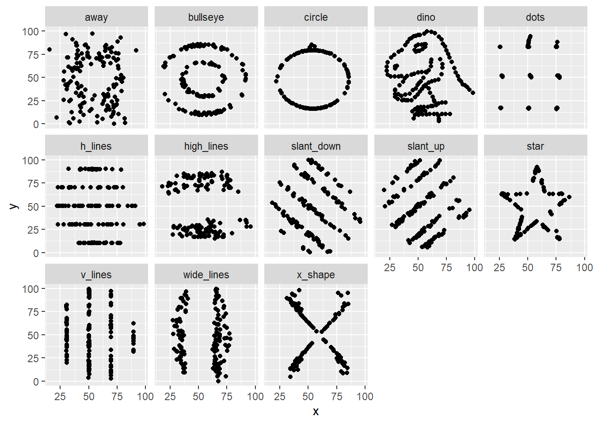

11 A picture is worth a thousand words (or a dinosaur)

11.0.1 Reference
Same Stats, Different Graphs: Generating Datasets with Varied Appearance and Identical Statistics through Simulated Annealing. Matejka, Fitzmaurice. Proceedings of the 2017 CHI Conference on Human Factors in Computing Systems. May 2017. Pages 1290–1294. https://doi.org/10.1145/3025453.3025912.